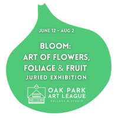

BLOOM: Art of Flowers, Foliage & Fruit Juried Exhibition
This juried exhibition celebrates the diverse ways artists interpret, reimagine, and respond to floral and botanical subjects through contemporary perspectives and explores the timeless yet ever-evolving relationship between humanity and the botanical world. From intimate studies of botanical detail to abstract interpretations of natural forms, environmental commentary to cultural symbolism, this exhibition presents works that